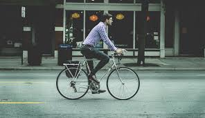

El uso de una bicicleta puede mejorar tu salud física y emocional. Ayuda al funcionamiento del sistema cardiovascular, tonifica los músculos y mejora la capacidad pulmonar. Reduce los niveles de colesterol en la sangre. Es un excelente ejercicio aeróbico que combate los riesgos de sufrir sobrepeso y obesidad.
